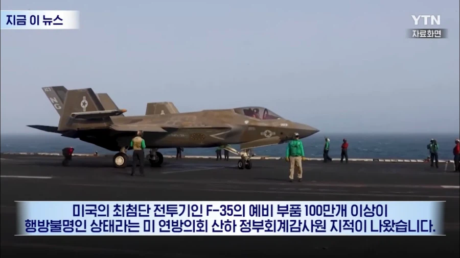
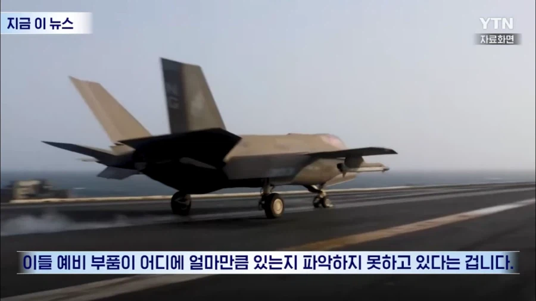

ㄷㄷㄷ


ㄷㄷㄷ
조금씩 뽀려서 중국에 팔면 돈 많이 받았을듯
이미 중국에 있는거 아니야?
이미 중국에서 날고 있을듯
100만개 ㄷㄷ
영화에서 본 거 같은데
전쟁이 없으면 돈 버는 방법이 부품 긴빠이해서 사고파는거라고ㅋㅋㅋㅋㅋ
익숙한 보드카 향기 🥃
보통 이런거 현장에서 급하다고 불출계통 안거치고 핸드오버 하다보면 생기는 찐빠긴한데
찐빠가 백만개면 3대정도 만들겠는데....
사막 파보면 3대 튀어나올듯
존나게 급했나 보군
중국: j-35 v.2 나옵니당^^ 많관부!!
ㅅㅂ 뭐가 모자라야 100만개냐. 거의 뭐 볼트 너트 100만개 모지란다 이래야 납득될듯
높은확률로 볼트 너트 리벳 긴빠이임
고오급 볼트너트일듯 ㅋㅋ
고오급 볼트너트 맞지 않음??
응 10만개면 그거일거갘다고
몇 년 뒤에 빡빡이 아저씨 전당포에 나옴
이번엔 또 어느 나라 첩이냐
개판이구만 ㅋㅋㅋ
f35 부품이 30만개 정도라는데
몇달뒤에 중국에서 신형 전투기 시제기 1,2,3호 나오는거 아니냐
이미중국제 전투기에 달려있을수도 있어 ...
중국으로 갔겠지 ㅋㅋㅋㅋㅋㅋㅋㅋㅋㅋㅋㅋㅋㅋ
간첩 오지게 심어놓았네
예전에 호주에서 미국 가던게 잘못돼서 홍콩에서 분실 됐었지 않나 ㅋㅋㅋㅋㅋ
왜 모른다는거지? 중국에 있을거 아니야 ㅋㅋㅋ
찐빠가 크게 났네 ㄷㄷ
볼트 너트 리벳 와셔 이런거는 사실 우리나라 공군도
재고조사하면 수량 찐빠나있긴해
근데 아무리 스케일 큰 미국이라도 백만개는 좀....
F-35 J-35 대체되었다
단순 소모성부품이 대다수를 차지할것같긴한데
온세계가 스파이다
망실 맞지?
군대있을때 배관창고 헐었는데 땅에서 탄약고 채로 나왔는데 걍 탄약고위에 창고 지은거였어
기체정비 등판해라..

트럼프가 항공 모함 끌고 한국으로 와주면 그건 레드팀이냐 블루팀이냐
중국 간첩 여기저기 엄청 많은데 우리나라는 뭐...
어디 저 창고 구석진 곳에 공가놨을듯